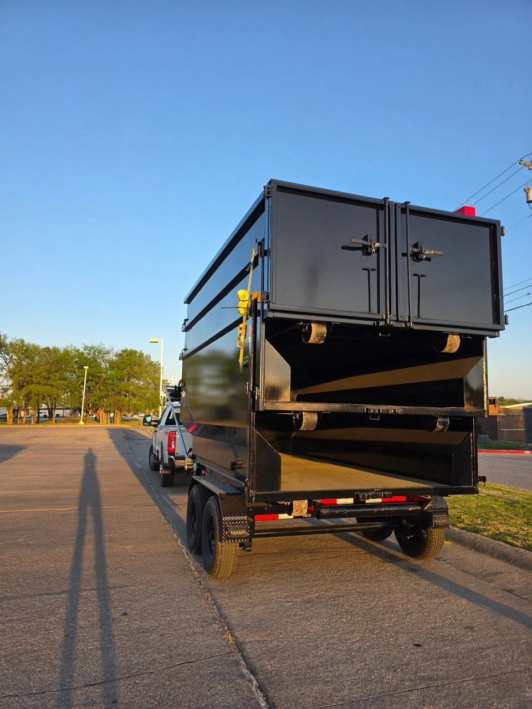

Residential Dumpster Rental in Kansas City
Home cleanouts, renovations, roofing, estate cleanouts, landscaping. We handle it all, with free driveway board protection on every drop.
Built for KC Homeowners
The Easiest Way to Handle a Big Residential Cleanout
A roll-off dumpster lets you work at your own pace. No scheduling trips to the dump. No hauling things to the curb piece by piece. Just load it up over 7 days and call us when you're done. We handle the rest.

Home Cleanouts
Clearing out a whole house or just finally tackling the basement? A 17-yard dumpster handles most whole-home cleanouts. Furniture, appliances (non-Freon), boxes, clothes, general household junk. It all goes in.

Kitchen & Bathroom Renovation
Cabinets, countertops, flooring, drywall, tile, fixtures. Renovation projects generate a lot of debris fast. A 13 or 17-yard handles most single-room reno jobs. Multi-room projects often need a 17 or 21-yard.

Roofing Projects
Old shingles and roofing materials add up in weight fast. We recommend the 21-yard for most roofing tear-offs, and suggest loading incrementally to monitor weight. Our $75/ton overage fee applies above the included weight allowance.

Estate Cleanouts
Cleaning out a family home after a loss or preparing a property for sale can be a lot to manage. A 17-yard gives you the space to work over several days without feeling rushed. We've worked with families in this situation before and we'll be straightforward with you.

Landscaping & Yard Cleanup
Brush, branches, sod, old landscaping materials. A 13-yard handles most yard cleanup jobs well. Note: dirt and gravel are heavy and can hit the weight allowance fast. Call us first if you have a lot of soil or concrete.

Deck & Fence Removal
Old deck boards, fence posts, lumber. All accepted. A 13 or 17-yard handles most deck removals. Break down boards where possible to fit more and get better value from your rental period.
Free Driveway Board Protection. Every Time.
Every single delivery includes wooden boards placed under the dumpster. This protects your concrete or asphalt from the weight of the container. No extra charge. No need to ask. It's part of how we do business.
Other companies treat it as an add-on. We treat it as a baseline standard. Your driveway is your property. We're a guest in it.
Which Size Do I Need?
All three dumpsters share the same 14x8 ft driveway footprint. Choosing a size is about volume of debris, not driveway space.
4 ft tall
- Small garage cleanout
- Single-room renovation
- Yard and landscaping debris
- Small junk removal
5 ft tall
- Whole-home cleanout
- Multi-room renovation
- Estate cleanout
- Deck or fence removal
6 ft tall
- Roofing project
- Large construction demo
- Full property cleanout
- High-volume commercial
Ready to Get Started?
Call or text to confirm availability and lock in your delivery date. Same-day delivery available.